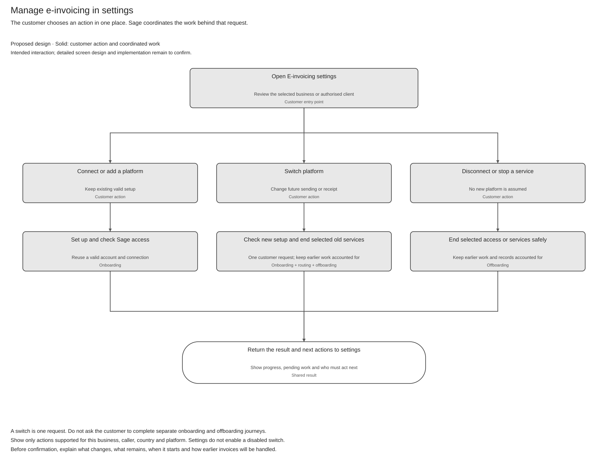
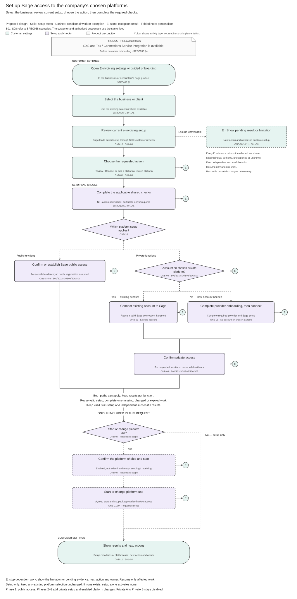

Draft review. Settings interaction is intended behaviour; supported actions and implementation still need qualification. No publication performed.
Customer Onboarding and Connectivity Solution Summary
Solution Summary · Logical Feature Specification · Sequence and Reuse Assessment · Folder
Revision overview — Phases 1–3
This view combines SPEC-SEI-018 onboarding and SPEC-SEI-034 connection setup. It keeps their scope and decisions. The summary and diagram now show the main journey; SPEC038 holds the required behaviour and SPEC039 the existing E-Invoice API reuse decisions. Archived sources are unchanged. Provider support, operator approval and actual Spain implementation remain open.
1 Purpose — Phases 1–3
What: let a business or its authorised accountant set up Sage access to its chosen supported e-invoicing platform. Show what is ready, what is missing and who must act next.
Why: use existing accounts, valid certificates and working connections without repeating setup or accidentally changing provider.
Customer interaction: use one E-invoicing settings area to review setup and choose Connect or add a platform, Switch platform or Disconnect or stop a service. A switch is one customer request; Sage coordinates the new setup and any old-service exit. SPEC038 — E-invoicing settings defines the intended interaction and enabled-action limits.
Reuse: use the existing E-Invoice API and Tax certificate capability. Confirm Spain service settings, NIF/address rules, permissions, certificate acceptance and provider support. The API was first used for France; it is shared.
Product precondition: integrate SXS and Tax certificate management before enabling e-invoicing; see the shared rule in 038.
Read next: SPEC038 explains behaviour and exceptions; SPEC039 gives calls, examples, reuse recommendations and required changes. These drafts do not prove production support.
E-invoicing settings — overview
The intended settings area lives in the customer's Sage product, for the selected business or an accountant's selected client. The exact menu location and screen design remain to agree with the product team.

Editable settings overview · PNG.
This is the primary specification home of the e-invoicing-settings-actions diagram. Its shared files stay in assets/diagrams/. SPEC038 — E-invoicing settings owns the settings behaviour. SPEC038 — Switch platform owns the complete customer switch journey. SPEC032 owns exit checks within that journey. SPEC014 — Routing controls owns the controlled change for future invoices. Offboarding references this overview rather than maintaining a second settings flow.
2 Terms used — Phases 1–3
Use the shared glossary.
3 Master Feature purpose and scope — Phases 1–3
Phase coverage: 1 — SPFE public solution; 2 — external private providers; 3 — Sage private-platform offering. Labels show analysis coverage, not delivery approval or confirmed API availability. REF-PHASE. Public checks remain relevant in Phases 2–3. Private A to Private B stays disabled. A customer may act directly or through an authorised accountant; one client needs no batch mode.
Onboarding does not send an invoice, assume public enrolment or prove operator eligibility. Sending, receiving, reporting and full exit stay in their owning features. Sage acting as a private platform requires separate operator approval under REF-OPERATOR.
Pending checks, unknown effects and unanswered actions remain open. Rejection/withdrawal records the requested work's outcome; cancellation completes only after possible external effects are resolved. Existing service and earlier obligations keep their own status.
Timing: customer setup has no general 30-day promise. An applicable platform-operator interconnection request has a one-month receiving-operator period, with the specific queue exception and required interim public exchange. SPEC038 operator handoff gives the exact rule. REF-INTERCONNECT.
4 Parties and responsibility boundary — Phases 1–3
5 Key open solution decisions — Phases 1–3
Existing decision IDs retain their owners; SPEC039 §2 lists the engineering answers needed.
6 End to end workflow — Phases 1–3

Figure 1. Phase 1 uses the public path; Phases 2–3 add the applicable private and enabled-change paths. The diagram does not select the Spain API resource model; see 039 GAP-02. Start after the product integrations in SPEC038 §4 are available. Reuse the company’s SXS dataset and complete only the required checks; public and private paths can both apply. Apply a routing change only when requested, enabled and authorised, with the target ready and the start agreed. Missing information, unknown results or unsupported choices return an action owner; keep successful results and existing B2G setup. Draw.io · PNG. Scenarios and detailed behaviour remain in SPEC038.
7 Master Feature lifecycle — Phases 1–3
8 Cross cutting solution considerations — Phases 1–3
Keep Spain rules separate from shared behaviour and keep test/production evidence separate. An added function rechecks only its affected requirements; working setup remains unchanged.
Reuse decisions belong to SPEC039. Reuse of a design is not proof of running code. Confirm Tax certificate acceptance for each selected action. DTS remains the preferred conversion candidate for later invoice features under SPEC008; onboarding converts no invoice. Peppol is outside this scope.
9 Dependencies and risks — Phases 1–3
10 Features within this Master Feature — Phases 1–3
Onboarding owns customer setup and its recovery. Certificate, connectivity/routing and invoice-operation features keep their responsibilities. SPEC038 links their handoffs. Configured account, readiness, route activation and operator approval remain separate results; no new deployment boundary is approved.
12 Assurance and completion checks — Phases 1–3
Before enabling work, close its functional/release checks in SPEC038 and implementation checks in SPEC039.
REF Source references — Phases 1–3